Префектура Киото · река Камо · летние веранды
Ужин над рекой Камо: четыре века летних веранд юка и пять мест, где за них стоит сесть
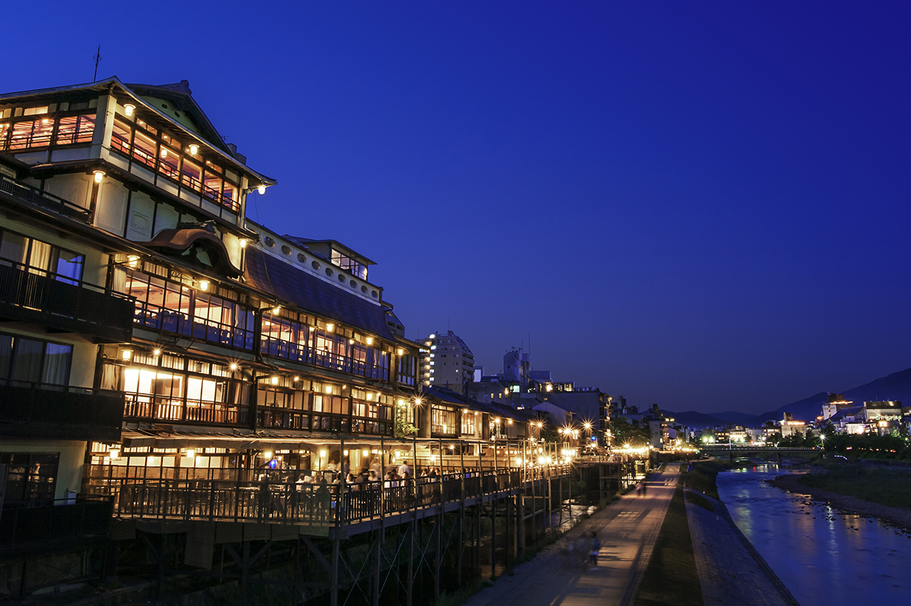
Летом рестораны на правом берегу реки Камо выдвигают над водой деревянные помосты, и ужин переезжает на свежий воздух. Пить сакэ у реки в жару киотосцы привыкли ещё около 400 лет назад.
История
Как отмель на реке стала летним залом
Летние веранды над рекой Камо называют норё-юка, «помост для прохлады». Река пересекает Киото с севера на юг, и каждое лето рестораны на её берегу ставят над водой деревянные настилы. Для приезжих это один из главных летних видов Киото, а у самих горожан с юка связана долгая история.
Когда-то Камо была гораздо шире. Её русло тянулось от нынешней улицы Ямато-одзи на востоке до улицы Тэрамати на западе. Река спускается с гор круто, несёт много песка и гальки, и со временем посреди города из наносов выросла широкая отмель. На ней начали собираться люди, появились скамьи и навесы для зрителей. С этого, как принято считать, и начались веранды.
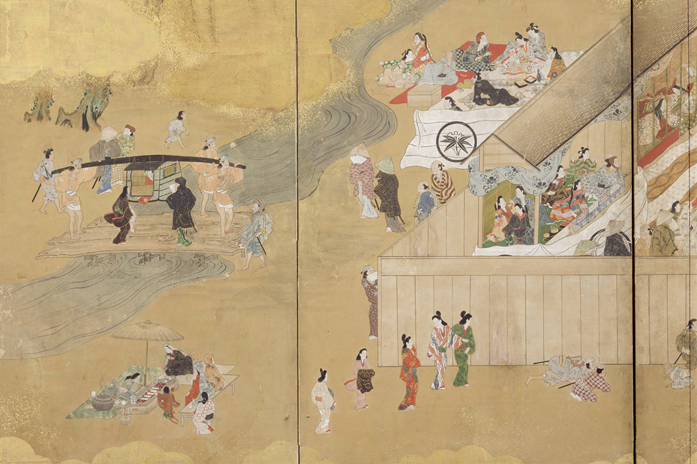
Хидэёси Тоётоми (1537–1598), полководец, который в конце XVI века объединил Японию, в 1589 году велел перестроить мосты Сандзё и Годзё. После этого берега, разорённые смутой предыдущего века, снова заполнились балаганами и торговцами.
«Люди стали собираться на отмели, как говорят, в конце периода Муромати. Торговцы держали там чайные, строили театральные балаганы, было очень оживлённо. Особенно много народу приходило на праздник Гион: в те дни в реке омывали священные паланкины, и на берегу выставляли множество скамеек»
председатель кооператива летних веранд на реке Камо
При сёгунах Токугава всё продолжалось, но у отмели была одна беда: Камо часто разливалась. В конце концов власти убрали отмель и укрепили берега. Чайные перебрались на оба берега, и тогда впервые появились помосты, выступающие над водой.
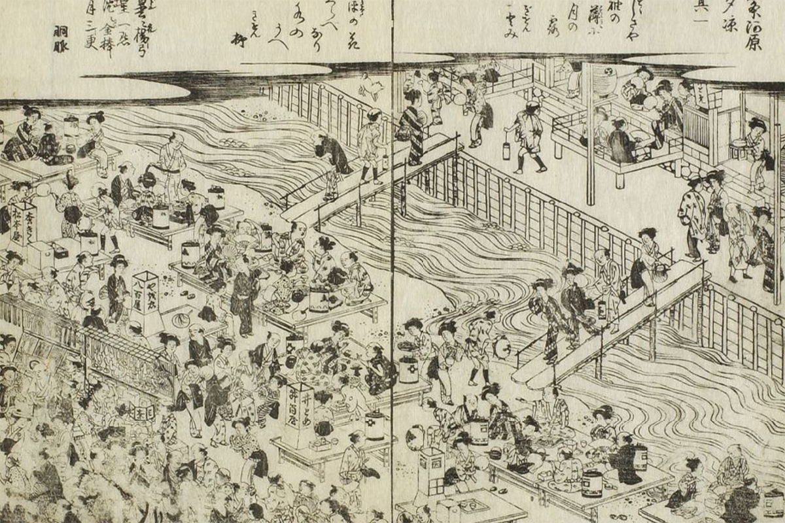
К 1731 году на берегах уже стояло до 400 заведений. Рядом выросли весёлые кварталы, процветали кабуки и но, а ночью река сияла огнями. Учёный Норинага Мотоори (1730–1801), исследователь древней японской литературы и поэзии, побывал тогда в Киото и записал в дневнике, что огни горели как звёзды и что такого оживления не увидишь ни в Эдо, ни в Осаке. Летние гулянья у Камо описывал популярный путеводитель по киотским достопримечательностям, их рисовал художник Окё Маруяма (1733–1795), а Хиросигэ Утагава (1797–1858), мастер пейзажной гравюры, посвятил им лист из серии видов Киото.
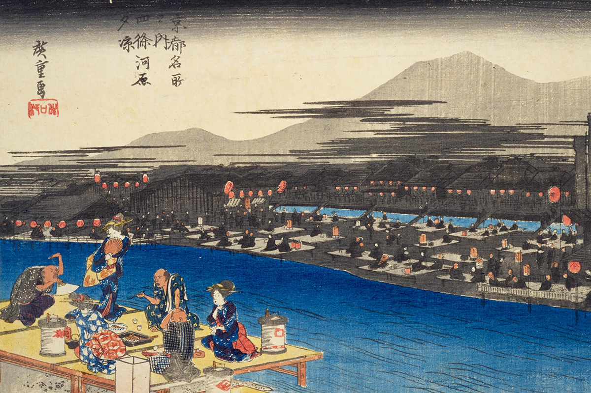
Только правый берег
В эпохи Мэйдзи и Тайсё веранды снова изменились. Сначала устоялся срок: юка стали ставить на два месяца, в июле и августе. Затем исчезли веранды на левом, восточном берегу. После переезда императора и придворной знати в Токио Киото искал новые пути, и в городе одна за другой шли большие стройки. Канал вдоль Камо прорыли в 1894 году, а в 1915 году к реке протянули линию электрички Кэйхан. После этого на левом берегу веранды запретили, и с тех пор их ставят только на правом, западном.
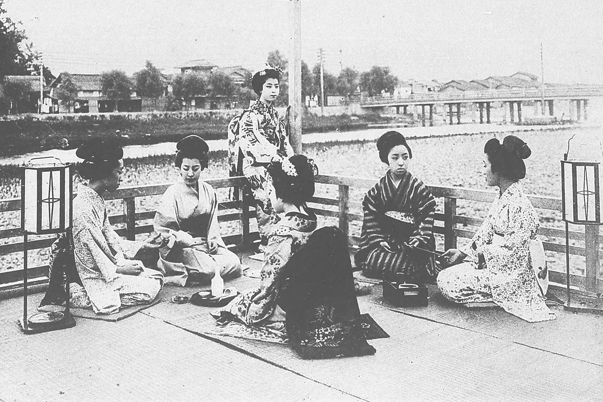
Во время войны веранды запретили, но около 1951 года их начали ставить снова, а около 1955 года разрешение просили уже 40–50 заведений.
«Тогда это были в основном рётэи и гостиницы с кухней, но со временем появились самые разные заведения. Теперь приходят люди всех возрастов и весело проводят время, и мне кажется, что мы вернулись к тому, с чего всё начиналось на отмели. Провести летний вечер за едой и сакэ: вот что веранды и хранят все эти годы»
председатель кооператива летних веранд на реке Камо
Сегодня веранд больше 90. Их ставят по общим правилам, чтобы берег сохранял свой облик. А сами веранды видны и прохожим: на них стоит посмотреть и с другого берега реки.
Вехи истории
- 1589: по приказу Хидэёси Тоётоми перестраивают мосты Сандзё и Годзё, на берегах Камо собираются балаганы и торговцы.
- 1614–1644: берег становится местом гуляний, их изображает ширма «Берег реки у Сидзё».
- 1751–1788: расцвет веранд, его запечатлел путеводитель 1799 года.
- Эпоха Мэйдзи: веранды ставят в июле и августе.
- 1923: городские власти вводят первые правила для веранд.
- 1942: из-за светомаскировки во время Тихоокеанской войны веранды запрещены.
- 1951: собрание префектуры Киото снова разрешает высокие помосты, несколько заведений возвращаются на реку.
- 2000: вечерние веранды разрешены с 1 мая по 30 сентября, дневные в мае и сентябре.
- 2015: заявок на веранды впервые набирается 100.
Выбор
Пять веранд, на которые стоит сходить
Раньше на верандах ели почти только японскую кухню. Теперь выбор гораздо шире: старые рётэи, китайский ресторан, французская кухня, бары для второго захода. В последние годы прибавилось и мясных заведений. Помимо привычных сукияки и мидзутаки, курицы в бульоне, вдоль реки попадаются вывески якинику, есть стейк-хаус с говядиной оми и редкий ресторан кайсэки из киотской говядины. Хозяева на этой полосе меняются нечасто, но бывает, что бывшая гостиница становится рестораном, а к 2024 году появились и простые кафе, и даже современная американская кухня. В 2024 году веранды выставили 86 заведений, и из них мы выбрали пять.
«Тимото»: рётэй, куда ходят актёры кабуки
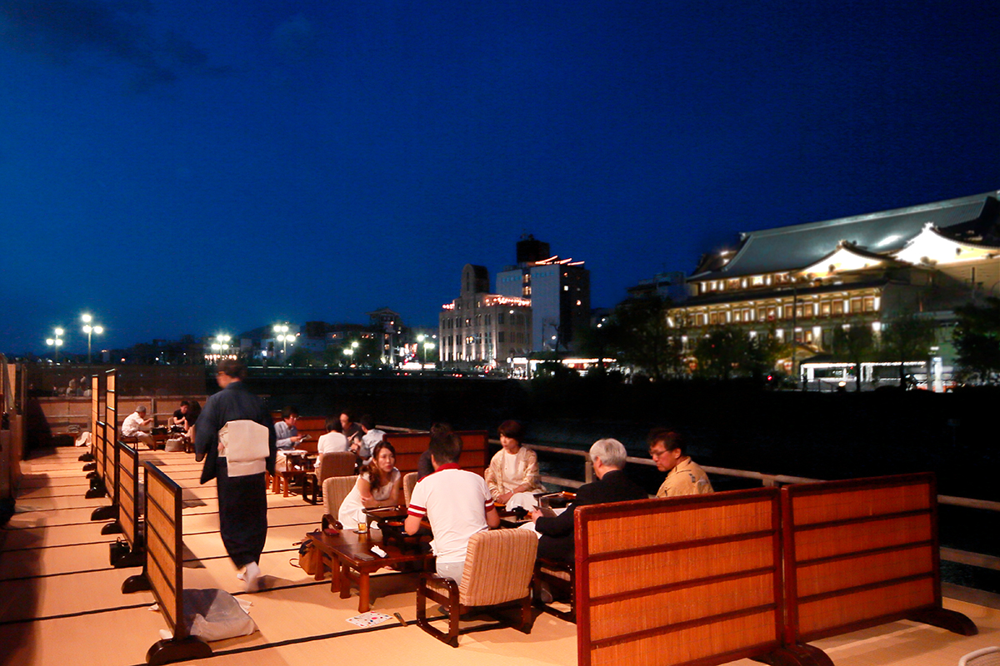
Рётэю больше 300 лет, и его давно любят актёры театра Минамидза, главной сцены кабуки в Киото. Летом за солидным входом начинается сезонное убранство, а в глубине дома открывается веранда с видом прямо на здание Минамидза. Здесь подают киотскую кухню, где каждое время года передано в подборе продуктов и посуды: за таким ужином неторопливо проводят вечер.
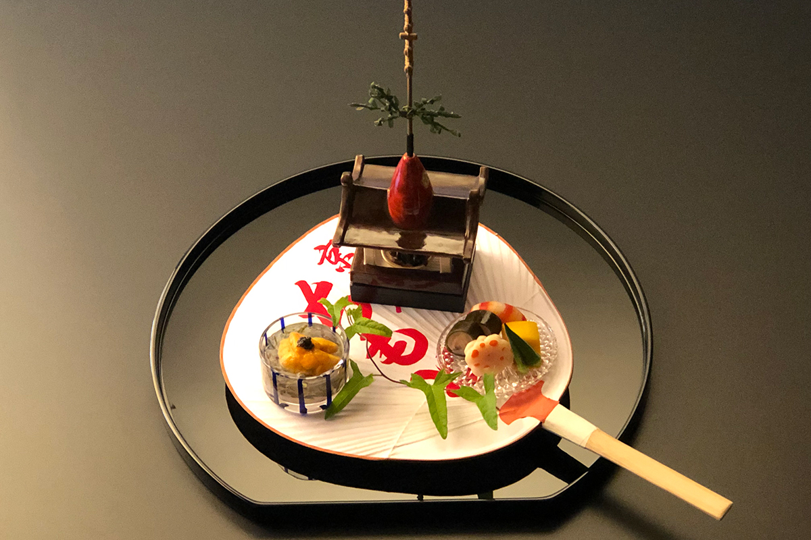
«Тимото»
- Адрес
- префектура Киото, город Киото, район Симогё, Сайсэки-дори Сидзё-сагару, Сайто-тё, 140-5
- Телефон
- +81 75-351-1846
- Часы работы
- 12:00–14:30 (последний заказ 13:00), 17:00–22:00 (последний вход 19:30)
- Выходные
- понедельник (если это праздник, ресторан открыт)
- Цены / Вход
- плата за место 1100 иен
- Сайт
- chimoto.jp
«Токасайкан»: пекинская кухня в доме Вориса
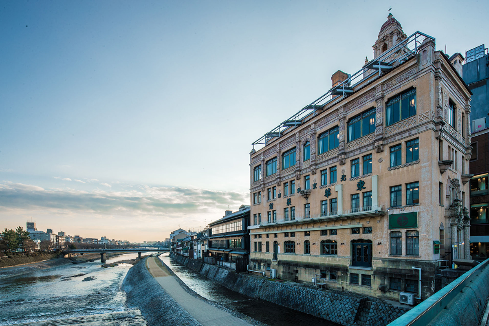
Американский архитектор Уильям Меррелл Ворис (1880–1964), автор многих западных построек в Японии, возвёл этот дом в 1920-х годах, а в 1945 году в нём открылся ресторан пекинской кухни. Интерьер почти не изменился, и в доме до сих пор работает лифт, старейший действующий в Японии. Кроме сетов в меню много отдельных блюд, а на веранде можно заказать всё то же, что и в зале. Например, фирменные спринг-роллы в обёртке из яичного блина под пиво.
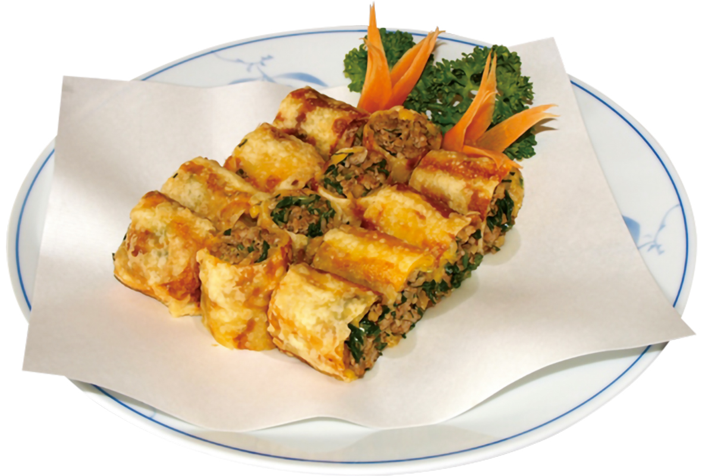
«Токасайкан»
- Адрес
- префектура Киото, город Киото, район Симогё, западный конец моста Сидзё-охаси
- Телефон
- +81 75-221-1147
- Часы работы
- 11:30–15:00, 17:00–21:30, в субботу, воскресенье и праздники 11:30–21:30; веранда 17:00–21:30 (последний заказ 21:00), в мае и сентябре по выходным и праздникам и днём
- Выходные
- один день в неделю, по графику на сайте
- Цены / Вход
- плата за место не берётся
- Сайт
- tohkasaikan.com
«Икария сёкудо»: бистро в старом городском доме
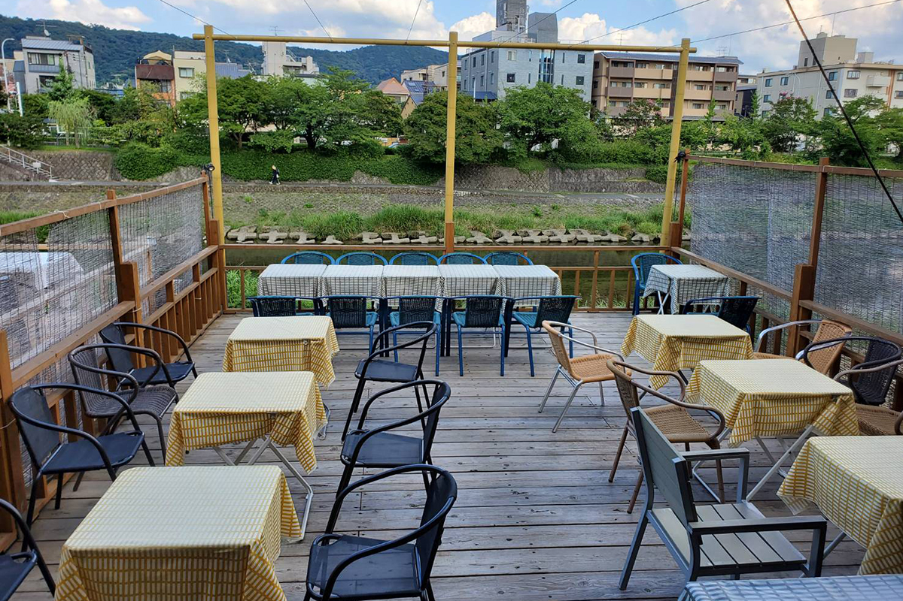
Бистро устроили в перестроенном старом киотском доме-матия. Его повара учились во Франции и Италии, и сезонных блюд в меню много. Два блюда стоит заказать хотя бы раз: долго томлённый конфи из целой курицы и пышное сырное суфле в кокотнице. Вино подбирает сомелье, бокал в 2024 году стоил от 550 иен.
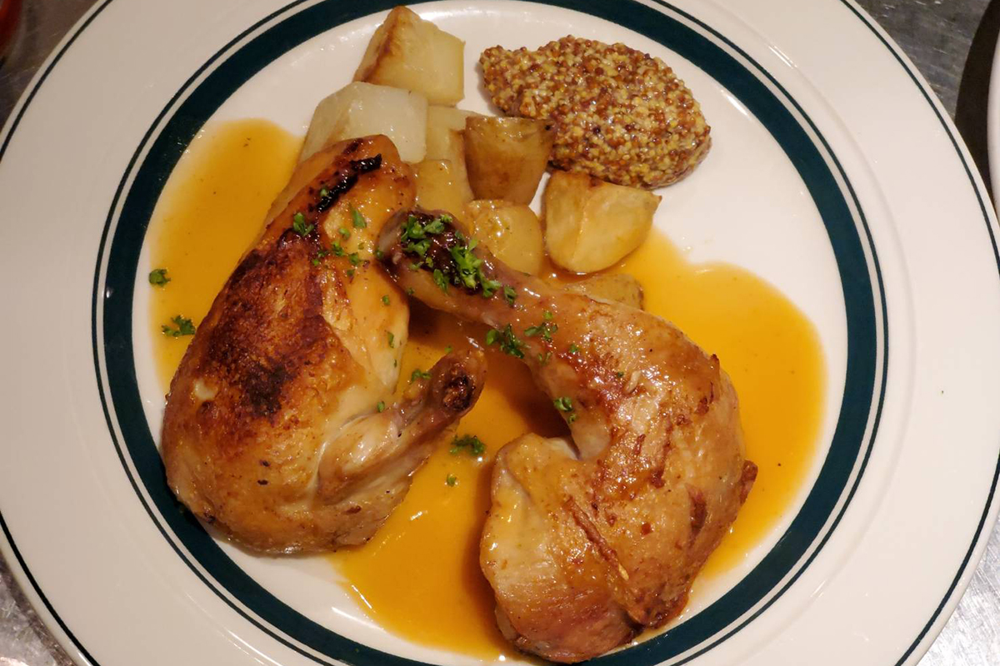
«Икария сёкудо»
- Адрес
- префектура Киото, город Киото, район Симогё, Киямати Донгурибаси-сагару, Сайто-тё, 138-2
- Телефон
- +81 75-276-2067
- Часы работы
- 11:30–14:30 (последний заказ 13:30), 17:00–22:00 (последний заказ 21:00)
- Выходные
- понедельник (если это праздник, то следующий будний день), бывают внеплановые выходные
- Цены / Вход
- плата за место 800 иен
SENT JAMES CLUB: классический бар у реки
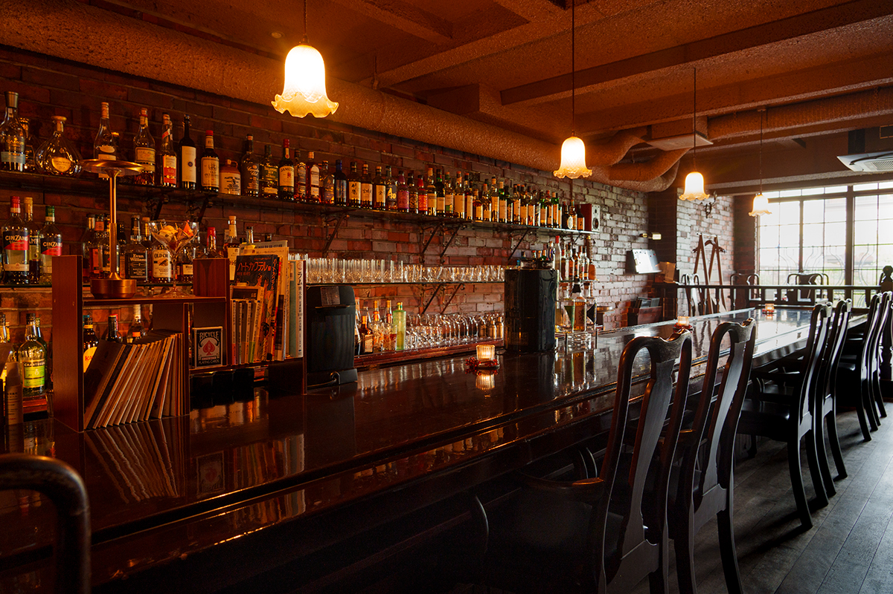
Здесь удобные кресла и глубокая стойка из красного дерева. Бар больше 40 лет входит в число классических баров Киото, а в сезон веранд становится ещё лучше. На веранде семь столиков, и до 21:00 их можно забронировать. В баре около 200 напитков: от виски киотских винокурен, о которых много говорят, до замороженных коктейлей.
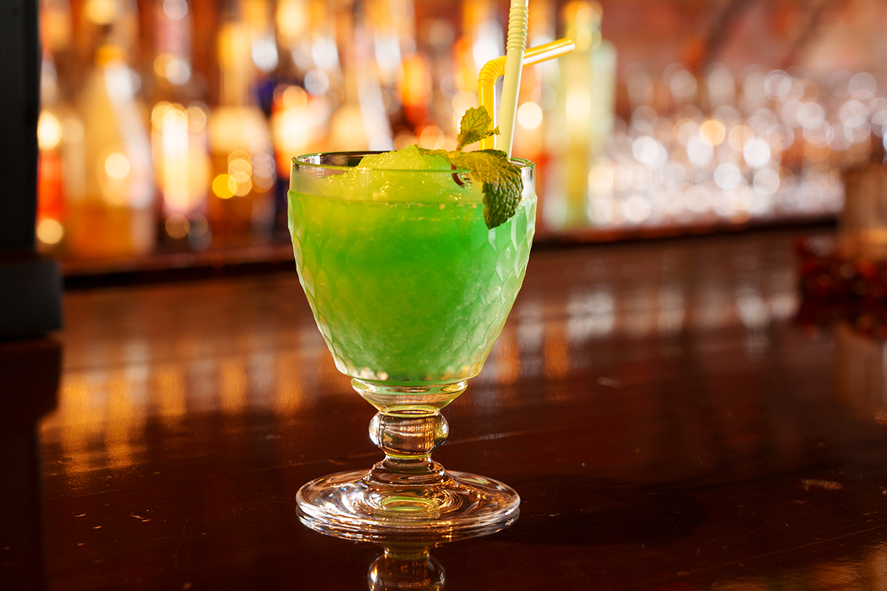
SENT JAMES CLUB
- Адрес
- префектура Киото, город Киото, район Симогё, Сайсэки Сидзё-сагару, Сайто-тё, 140-19
- Телефон
- +81 75-351-7571
- Часы работы
- май–сентябрь 18:00–02:00 (последний заказ 01:30), октябрь–апрель 19:00–02:00 (последний заказ 01:30)
- Выходные
- среда
- Цены / Вход
- плата за место 1100 иен
LE UN: французская кухня в доме старого рёкана
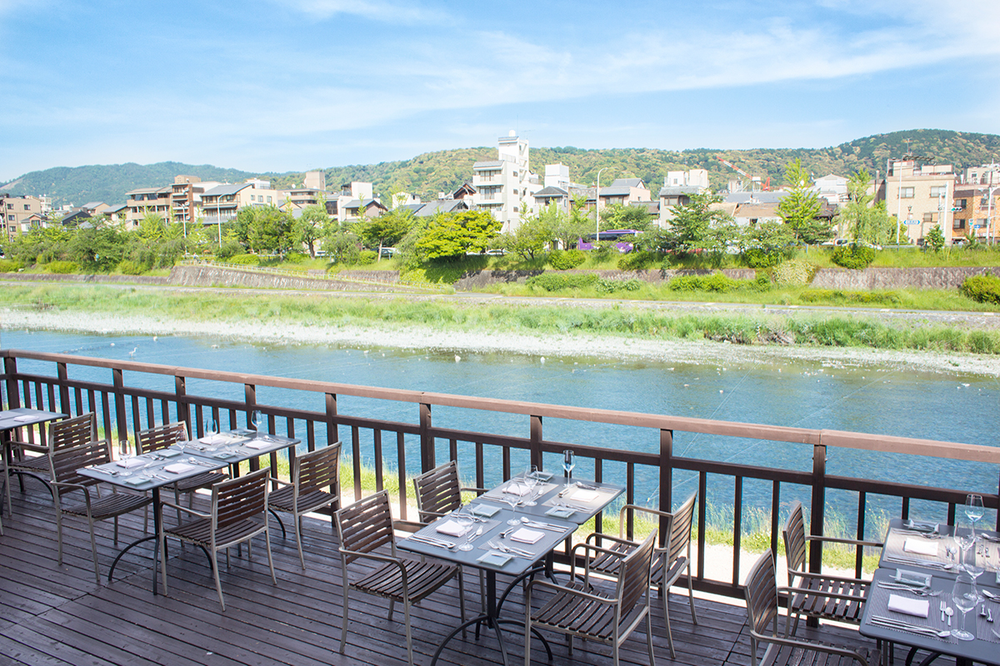
Ресторан работает в здании рёкана «Фунацуру», открытого больше 150 лет назад. Здесь готовят французскую кухню на продуктах Киото и соседней Сиги, и блюда получаются изящными и праздничными. На время веранд ресторан составляет особые обеды и ужины. В 2024 году он впервые открыл по будням кафе на веранде: к киотским сладостям известных кондитерских подбирали четыре вина.
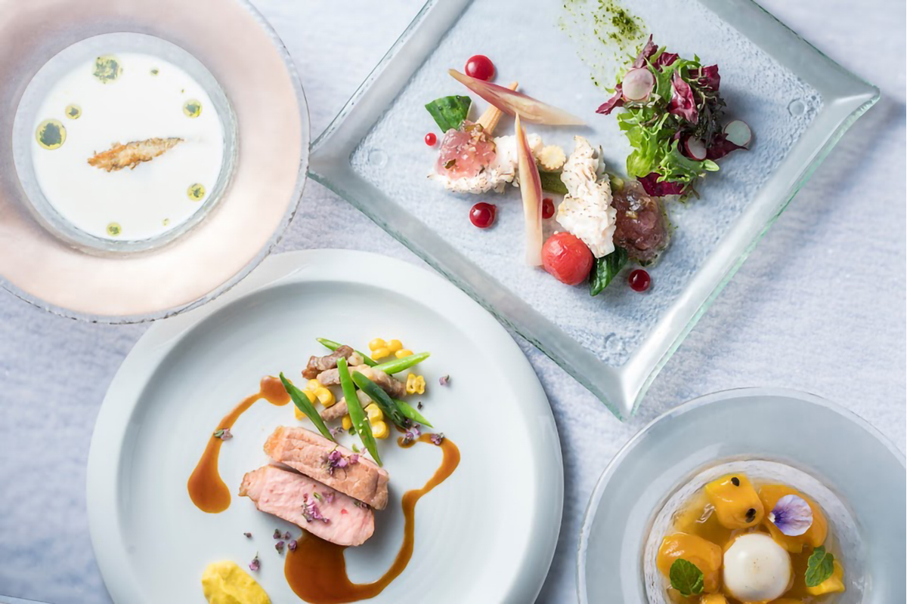
LE UN Funatsuru Kyoto Kamogawa Resort
- Адрес
- префектура Киото, город Киото, район Симогё, Киямати-дори Мацубара-агару, Миноя-тё, 180
- Телефон
- +81 75-351-8541
- Часы работы
- 11:30–15:30 (последний заказ 14:00), 17:30–22:00 (последний заказ 21:00); в сезон веранд в пятницу, субботу, воскресенье, праздники и накануне праздников до 23:00; кафе на веранде 14:00–16:00
- Выходные
- вторник (в сезон веранд без выходных; кафе на веранде закрыто в субботу, воскресенье и праздники)
- Цены / Вход
- плата за место не берётся
- Сайт
- funatsuru.com
В 2024 году веранды на Камо работали с 1 мая по 30 сентября. У каждого заведения свой распорядок и свои часы, поэтому перед визитом лучше заглянуть на его сайт.
Фото: Такуя Осима; архивные изображения: Национальная парламентская библиотека Японии, ColBase, Международный исследовательский центр японоведения.